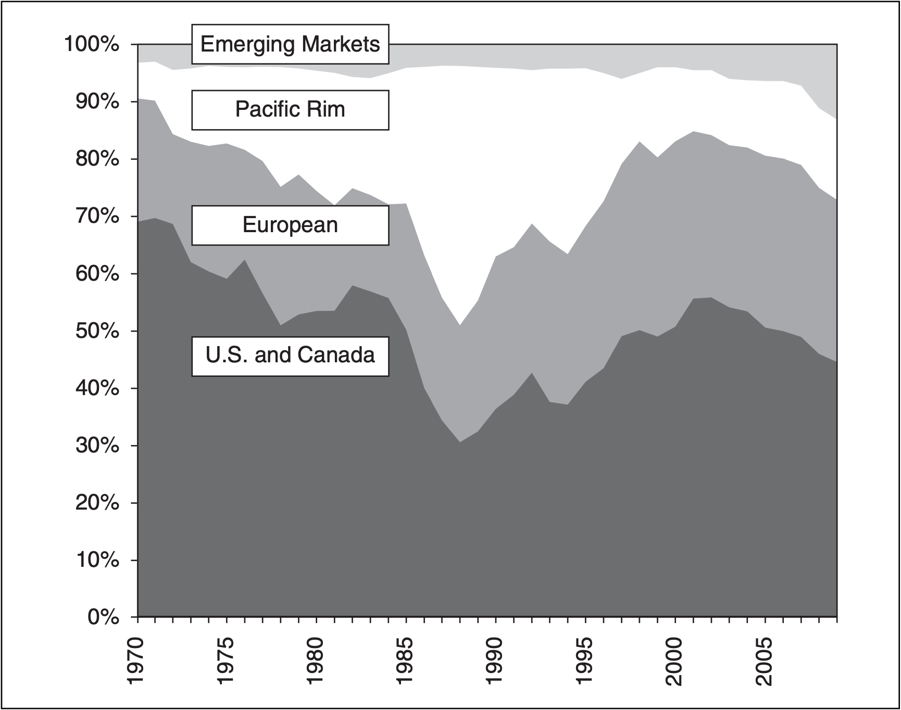
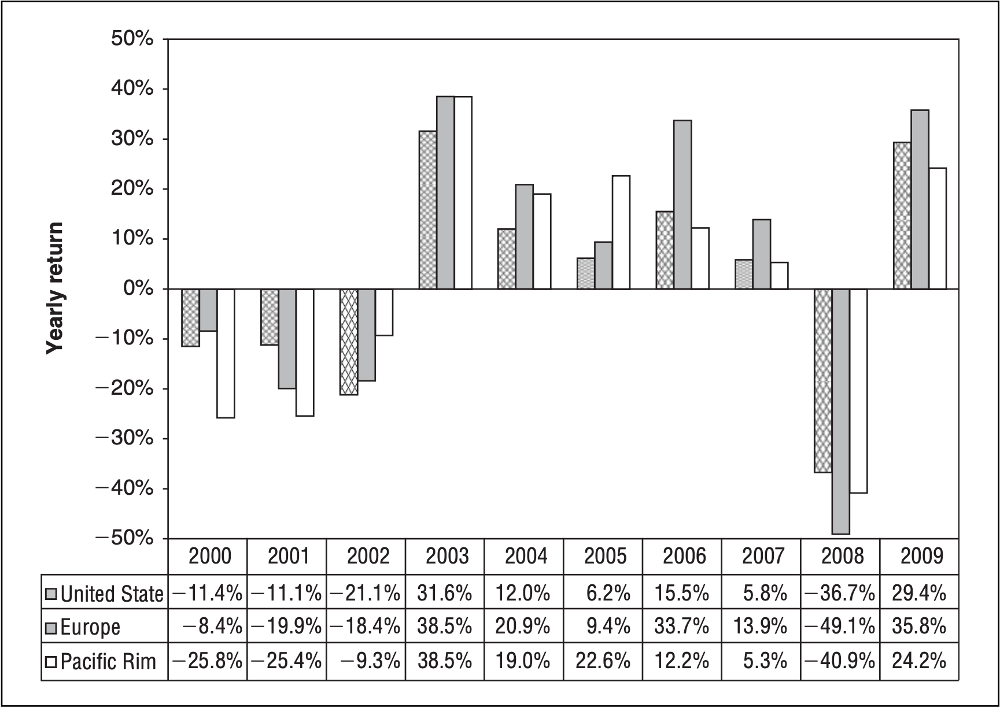
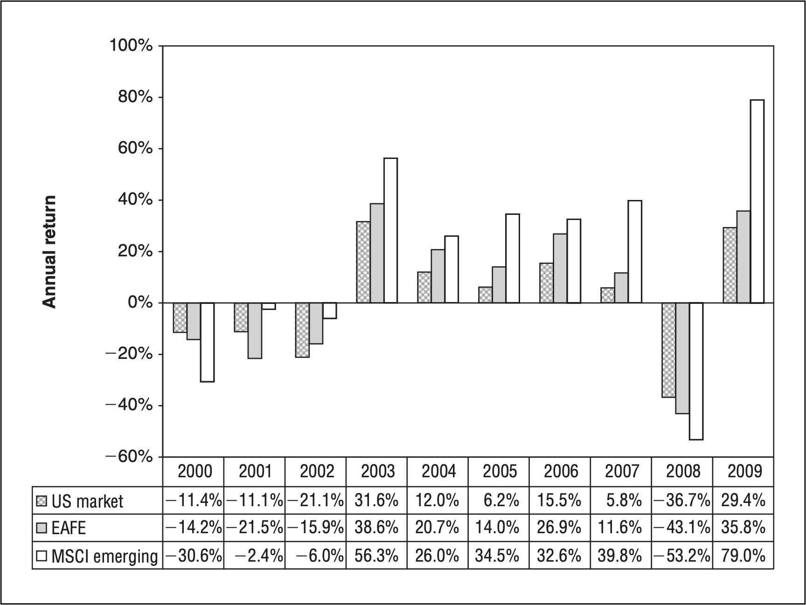
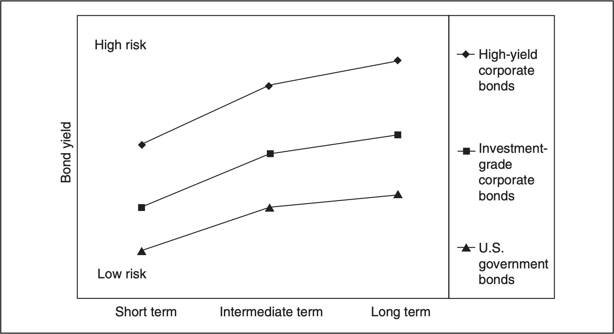
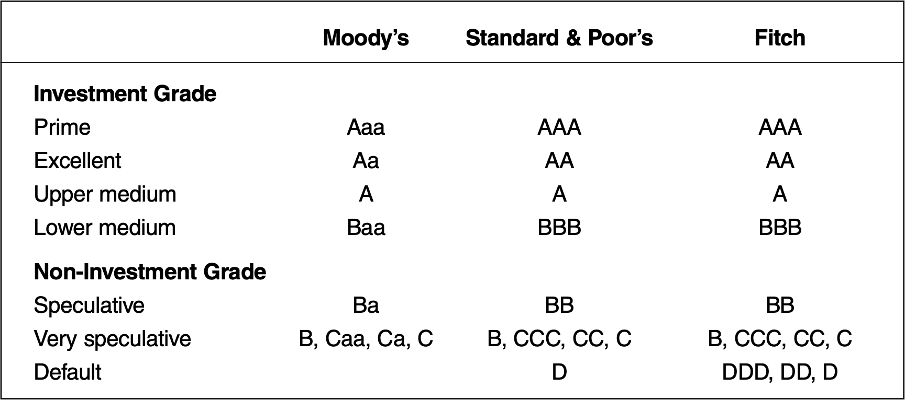
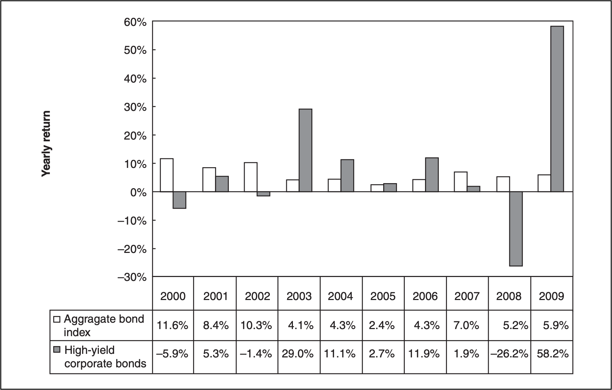
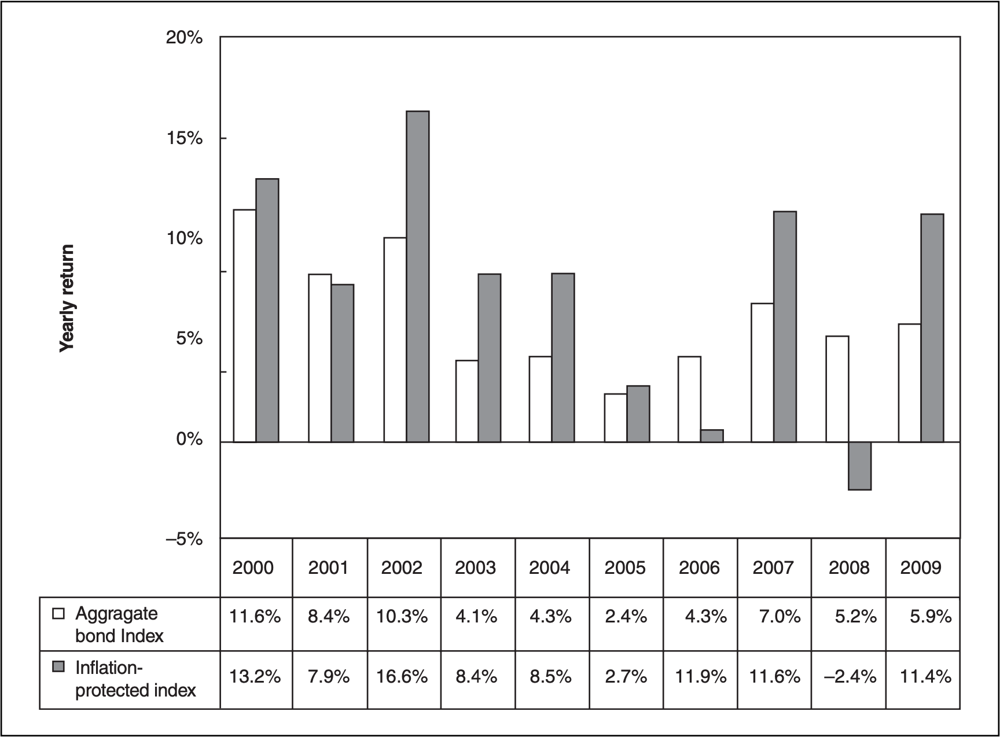
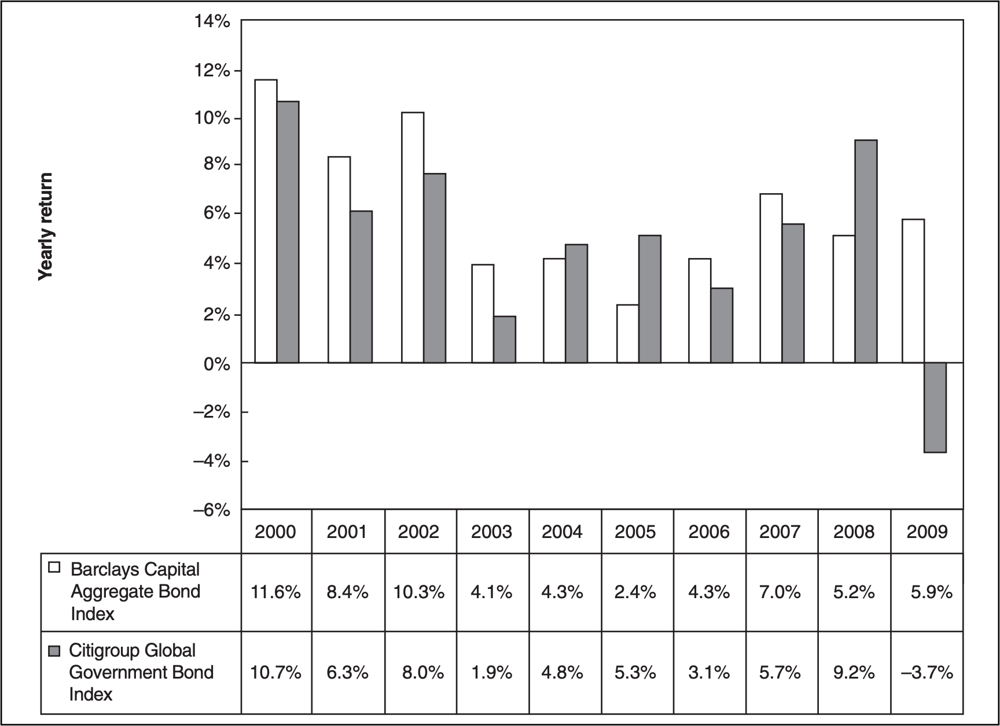
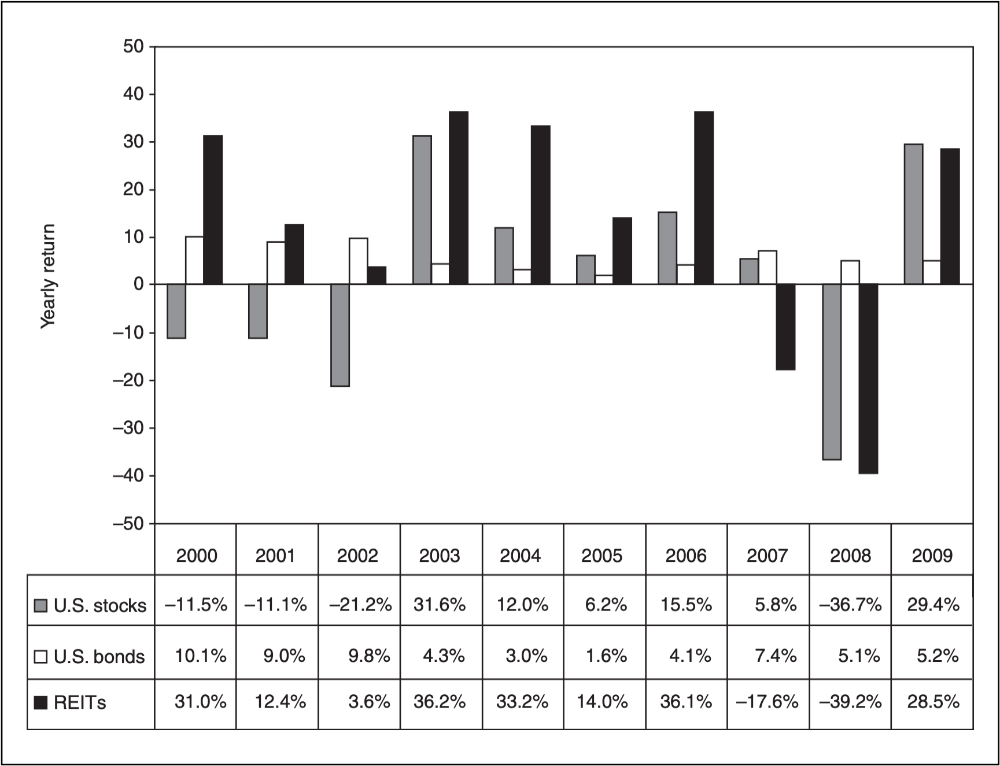

《資產配置投資策略》：資產類別的選擇
《資產配置投資策略》是 All About Asset Allocation 第二版。作者用淺白的例子傳達讀者資產配置與分散投資的重要性，我認為這是一本理論與實務兼具的書籍，此為第二部分「資產類別的選擇」之個人閱讀摘要整理。

投資標的的選擇
- 納入投資組合的所有資產類別都必須能創造高於通貨膨脹率的實質期望報酬
- 各資產類別之間的風險基本上必須各有不同
- 透過多變的移動相關性水準測試，以釐清個資產類別的個別風險
- 選擇的資產類別必須有高變現性與低成本的基金可供投資人介入
資產配置策略的核心是由四個步驟組成：
- 根據個人的長期財務需求與風險承受度來決定投資組合的風險水準。接著，根據這個風險水準擬定一個股票配置和一個固定收益配置。
- 分析各個資產類別，並選出個別風險、期望報酬、與其他資產類別的歷史相關性以及稅負效率（如果適用的話）等要素皆符合個人需求的資產類別。
- 檢視第二步驟選出的資產類別，再挑選最能代表這些資產類別的證券，其中，低成本的指數型資金與精選的 ETF 是很好的選擇，因為這些基金能提供分散投資的利益，且其報酬率一定非常接近整體資產類別的報酬率。
- 徹底落實資產配置計畫，接著，偶爾要進行投資標的的再平衡作業，以控制投資組合風險並強化長期報酬率。
計畫納入投資組合的潛在資產類別必須具備三種重要的特質：
- 特定資產類別和投資組合裡的其他資產類別，必須存在根本的差異。
- 每一項資產類別都必須能創造高於通貨膨脹率的長期期望報酬率。
- 一般人能藉由分散投資的低成本基金或產品介入這項資產類別。
美國股票投資標的
1 | |
1950 年至 2009 年間，美國整體股市每年創造了 10.9% 的報酬率，明顯高於五年期國庫票據的 6.1% 報酬率和 3.8% 的通貨膨脹率。下表說明了不同期間調整通貨膨脹後的報酬率。
| 1950–2009 | 1968–1982 | 2000–2009 | Historic Range over Inflation | |
|---|---|---|---|---|
| U.S. stocks | 7.2% | 0.2% | -2.9% | 5% to 7% |
| Five-year T-note | 2.2% | 0.3% | 3.0% | 1% to 2% |
1950 年至 2009 年有幾個期間，美國股票的表現並不理想。例如，從 1968 年至 1982 年的 15 年間，美國股票調整通貨膨脹後的報酬率只比通貨膨脹率稍微高一點；另外，調整通貨膨脹後，2000 年至 2009 年的美國股票更是虧了 2.9%，那是 1930 年代大蕭條以來最糟糕的實質報酬表現。
所以，股票投資人必須體認到，股票有時候也難免無法創造高於通貨膨脹率的報酬。這是投資風險使然，而正因如此，投入市場的時間長短，對股票投資人特別重要。長期而言，股票的報酬率確實遠遠超過通貨膨脹，而且，預期未來股票還是實質報酬率最高的投資標的之一。但投資人必須做到「不管股票市場狀況如何演變都能留在場內投資」，唯有如此，才能獲得這種長期利益。
在建構股票配置時，最好的起步就是找一檔涵蓋全體美國股票市場的基金來投資。接下來，再進一步分析美國股票市場的各個不同產業／部門，說不定能從中發現進一步分散投資的機會。例如，增加某個或某幾個精選產業／部門的投資比重，以達到更分散投資的目的。投資人應該建立一個能有效區隔市場產業／部門的系統，以避免重複投資特定的產業／部門。
所有指數編制公司都會根據不同風格與規模，來為自家的整體市場指數的成分企業分類，不過，每一個指數編制公司為其指數成分股分類的方法論各有不同。就規模分類來說，多數指數編制公司都採三種分類：大型、中型和小型；而就風格分類而言，至少會採兩種風格分類，包括成長型與價值型。少數公司會有第三種風格次類，稱為核心、中性或混合型。
以下是《資產配置投資策略》所列之低成本美國股票共同基金與 ETF 僅供參考：
| Symbol | Benchmark | |
|---|---|---|
| Total Stock Market Funds | ||
| Vanguard Total U.S. Market Index | VTSMX | MSCI U.S. Broad Market Index |
| Schwab U.S. Broad Market ETF | SCHB | Dow Jones U.S. Broad Stock Market Index |
| iShares Russell 3000 Index ETF | IWV | Russell 3000 Index |
| Small Value Funds | ||
| Vanguard Small-Cap Value Index | VISVX | MSCI U.S. Small Cap Value Index |
| iShares S&P SmallCap 600/BARRA Value | IJS | S&P 600/BARRA Value Index |
| iShares Morningstar Small Value | JKL | Morningstar Small Value Index |
| Microcap Funds | ||
| Bridgeway Ultra-Small Co. Mkt. | BRSIX | CRSP Decile 8–10 (smallest stocks) |
國際股票投資標的
- 投資國際股票能達到分散投資不同貨幣的效果
- 已開發國家包含先進國家的市場
- 新興市場和前驅市場 (frontier market) 則擴展到新的地理區域
- 國際股票同樣存在規模與風格溢酬等現象
投資國際有助於獲取分散投資的利益，不過，這麼做並非不會使風險上升。國際股票價格的波動性通常比美國股票價格的波動性更高。額外的波動性導因於很多不同的變數，包括：
- 因美元升值而衍生的外國匯率風險
- 因政府作為或不作為而衍生的政治風險
- 因外國交易所對非本國投資人的限制而衍生的交易與保管風險
- 因缺乏監督與司法體系鬆散而衍生的監理風險
- 因外國企業資訊揭露缺乏而衍生的資訊風險
由於牽涉到那麼多額外的風險，所以在從事國際股票投資活動時，關鍵還是要分散投資，才能分散風險。沒有人知道哪個國家近期內的投資績效將超越全球市場，也沒有人知道美元將會轉強或轉弱。因此投資人持有每個國家的比重最好還是不宜過高，而且應該每年再平衡自己手上的全球曝險部位。
經濟學家向來把這個世界區分為兩個不同的次要類別：已開發市場 (developed markets) 及新興市場 (emerging markets)。這兩個次類的差異主要取決於人均經濟規模以及股票與債券公開市場的發展程度。
已開發市場是指每年人均國內產毛額 (GDP) 超過大約 1 萬美元，且擁有深厚且成熟證券市場的經濟體。已開發市場族群又可分為三個區域族群：北美 (North America)、歐洲 (Europe) 和環太平洋 (Pacific Rim)。未能達到上述 GDP 要求且金融市場開發程度較低的國家，就稱為新興市場。新興市場可進一步區分為早期前驅市場 (early-stage frontier markets) 和後期開發新興市場 (later-stage developed emerging markets)，區分標準取決於一個國家朝開放與自由市場經濟體系發展的速度。基於利益考量，多數新興市場基金持有的投資標的都集中在後期開發新興國家，因為這些國家的資本市場價值佔新興市場市值的比重最高。
下圖是根據各地區的市場價值相對全球市值的百分比來建構的世界股票市場價值配置。這張圖被分成四個地區：北美已開發市場、環太平洋已開發市場、歐洲已開發市場，以及新興市場。

未被列為已開發市場或新興市場且股票市場還不成熟的國家，通常會被歸類為前驅市場 (frontier markets)。前驅市場的總市值還不到全球總市值的 1%。
已開發國家市場的國際指數中，最多人追蹤的是 MSCI FAFE (Morgan Stanley Capital International Europe, Australasia, and the Far East Index) 指數，EAFE 指數是由總部設在歐洲與環太平洋地區等 23 個已開發市場的大約 1000 家大型企業組成。看待 EAFE 指數的最好方式，就是把它想成涵蓋美國與加拿大除外所有已開發國家的大型國際 S&P 500 指數。EAFE 指數是一個流通股浮動調整 (float-adjusted) 指數，所以它只納入可自由交易的證券，不含被緊密控制的大宗股權以及產業交叉持股。EAFE 指數可以進一步細分為兩個不同的地理區域指數：MSCI 歐洲指數 (MSCI Europe Index) 及 MSCI 環太平洋指數 (MSCI Pacific Rim Index)。下圖表示美國、歐洲及環太平洋市場的報酬差異比較。

MSCI 新興市場指數 (MSCI Emerging Markets Index) 涵蓋 22 個可供投資的國家。這項指數是一個市值加權指數，而為了詳實反映外國投資人所受的限制，MSCI 是根據每家企業的流通股浮動調整價值來編制指數。下圖表示美國股票、EAFE 指數與新興市場指數的年度報酬率差異比較。

長期而言，所有地區的期望投資績效可能大致相同，不過，投資國際市場的主要理由是要獲得貨幣分散投資的利益，其次是要提高證券的分散投資程度。利用股票配置將資金分散投資到美元以外的資產，是取得貨幣曝險部位的好方法，而且成本不高。只要承接全球個地區以不同貨幣計價的投資部位，就能將貨幣分散投資的利益極大化。當然，必須每年進行投資組合再平衡作業，以回歸原始的目標部位。
以下是《資產配置投資策略》所列之低成本國際股票基金，僅供參考：
| Symbol | Benchmark | |
|---|---|---|
| European Mutual Funds | ||
| Vanguard European Index | VEURX | MSCI European Index |
| iShares Europe 350 Index | IEV | S&P Europe 350 Index |
| iShares MSCI UK Index | EWU | MSCI United Kingdom Index |
| iShares MSCI EMU Index | EZU | MSCI EMU Index |
| Pacific Rim Mutual Funds | ||
| Vanguard Pacific Index | VPACX | MSCI Pacific Index |
| iShares MSCI Japan Index | EWJ | MSCI Japan Index |
| iShares MSCI Pacific ex-JPN | EPP | MSCI Pacific ex-Japan Index |
| Emerging Markets Funds | ||
| Vanguard Emerging Markets | VEIEX | Select Emerging Markets Index |
| iShares Emerging Markets | EEM | MSCI Emerging Markets Free |
| DFA Emerging Markets | DFEMX | DFA Emerging Markets Index |
| International Value Funds | ||
| Vanguard International Value | VTRIX | Actively managed fund |
| DFA International Value | DFIVX | DFA International Value |
| International Small Funds | ||
| Vanguard International Explorer | VINEX | Actively managed fund |
| DFA Small International | DFISX | DFA Small International |
| DFA Small International Value | DISVX | DFA Small International Value |
| Single-Country Funds | ||
| iShares MSCI Canada | EWC | MSCI Canada Index FTSE/Xinhua |
| iShares FTSE/Xinhua China 25 | FXI | China 25 Index |
固定收益投資標的
- 應投資的固定收益次類標的有很多種
- 不同次類標的各有獨特的風險及報酬狀況
- 一個分散投資的固定收益投資組合有助於提升報酬率
- 低成本債券基金是最理想的投資管道
全球債券市場範圍既廣且深，故投資人一樣可能藉由適當的固定收益標的配置，達到類似股票配置的分散投資目的。債券投資機會的涵蓋面相當廣，包括政府債券、公司債、不動產抵押貸款相關債券與外國債券等。
指數編制公司將債券細分為不同類型和風險等級。以下是債券市場的常見區隔與分類實例之一：
- 聯邦、州及地方政府債券
- 美國國庫發行且由政府擔保的證券（票券、票據、債券）
- 政府機關發行且聯邦存款保險公司 (Federal Deposit Insurance Corporation, FDIC) 定存單保險的債券
- 州及地方政府地方債券
- 以稅收擔保的一般義務債券 (General obligation)
- 以非稅收之收益擔保的收益債券 (Revenue bonds)
- 建設美國債券 (Build America bonds) (利息須課聯邦所得稅)
- 企業界的固定收益標的
- 公司債
- 投資等級公司債 (介於 BBB 至 AAA 級評等)
- 非投資等級公司債 (BBB 級以下)
- 工業收益債券 (Industrial revenue bonds) (必須課徵最低稅負的地方債券)
- 可轉換公司債
- 優先股及可轉換優先股
- 公司債
- 抵押貸款債券
- 政府國家抵押債款協會 (Government National Mortgage Association, GNMA)
- 聯邦住宅貸款抵押公司 (Federal Home Loan Mortgage Corporation, FHLMC)
- 聯邦國家抵押貸款協會 (Federal National Mortgage Association, FNMA)
- 資產擔保債券
- 組合信用應收款 (Pooled credit card receivables) (第一銀行 [Bank One]、 花旗集團 [CitiGroup])
- 組合汽車貸款 (Pooled auto loans) (福特汽車 [Ford], 通用汽車 [GM])
- 組合自有住宅權益貸款 (Pooled home equity loans and other bank receivables)
- 外國債券
- 已開發市場 (主權債券與公司債)
- 新興市場債券 (主權債券、布雷迪債券 [Brady] 與公司債)
各國政府和企業會發行各種不同期限的債券。下圖將債券期限分成三種區間：短期、中期和長期。短期債券的平均期限是 3 年以下；中期債券的平均期限是 4 年至 9 年；而長期債券的平均期限是 10 年以上。在正常的經濟狀況下，長期債券的報酬率理當較高，因為那個市場區隔的利率風險較高。如果特定債券的價值會因利率上升而縮水，它就隱含利率風險。長期債券的利率風險高於短期債券，因為長期債券距離到期的期間較長。而因為長期債券的風險較高，所以長期債券的投資人理當因承擔較高的風險而獲得較高的利率。

相較於低信用風險債券，信用風險較高的債券理當支付較高的利率才能吸引投資人來承擔這項風險。下表是不同信用評等機關如何根據信用度將債券分成不同次要類別。

S&P 公司和 Fitch 公司對投資等級債券的評等是 BBB 級以上，而 Moody’s 對投資等級債券的評等則是 Baa 以上。政府機關直接和間接的債務如國庫債券及聯邦政府機關債券的信用風險最低，但殖利率也最低。投資等級的美國公司債以及基本面良好的地方債券則屬於投資等級的債券中，信用水準中等的債券，這些債券都獲得例如 S&P 公司等信用評等機關的投資等級評等，不過支付的利率卻比政府債券高。位於風險階梯最底層的債券是高收益公司債與非投資等級地方債券。如果企業或地方債券發行者的債信評等低於投資等級，代表它們的償還債務的能力大有疑問。這些債券也因其投機本質而被稱為「垃圾」債券 (junk bond)。
多數在美國發行的應稅投資等級債券，都會被納入巴克萊資本美國總和債券市場指數 (Barclays Capital U.S. Aggregate Bond Market Index)。其中一類例外是國庫抗通膨證券 (TIPS)，因為 TIPS 是一種本質獨特的債券，所以被納入另一項指數。
巴克萊資本美國總和債券指數成分債券的平均期限大約是 6.8 年，其中 70% 以上的成分債券是美國國庫證券、政府機關債券和政府擔保的不動產抵押債券，剩下的成分債券則是一些投資等級公司債和洋基債券。指數的所有成分債券都屬投資等級。市場上有幾檔債券指數基金及 ETF 是追蹤巴克萊資本美國總和債券指數，《資產配置投資策略》作者建議選擇一檔做為固定收益投資組合的基本部位即可。然而增加其他固定收益證券也能獲得分散投資的利益，可達到分散投資效果的次類債券標的包括高收益公司債、TIPS 和新興市場等外國債券。
高收益債券與總和債券指數年度報酬率比較：

巴克萊資本美國總和債券指數報酬率與巴克萊資本 TIP 指數報酬率比較：

巴克萊資本美國總和債券指數與花旗集團全球政府債券指數 (未避險)：

以下是《資產配置投資策略》所列之低成本固定收益基金，僅供參考：
| Symbol | Benchmark | |
|---|---|---|
| Total Bond Market Funds | ||
| Vanguard Total Bond Market | VBMFX | Barclays Capital U.S. Aggregate Bond Index |
| iShares Barclays Aggregate | AGG | Barclays Capital U.S. Aggregate Bond Index |
| Vanguard Short-Term Bond Index | VBISX | Barclays 1–5 Government/Credit Index |
| Treasury Inflation-Protected Bonds | ||
| Vanguard Inflation-Protected Securities | VIPSX | Barclays Treasury Inflation Notes Index |
| iShares Barclays TIPS Bond | TIP | Barclays Treasury Inflation Notes Index |
| Individual iBonds | Purchase through banks or the U.S. Treasury | |
| High-Yield Corporate Bonds | ||
| Vanguard High-Yield Corporate Bonds | VWEHX | Actively managed B–BB grade |
| Foreign Bond Funds | ||
| iShares S&P/Citigroup International Treasury Bond | IGOV | Japan is 25% of the fund |
| iShares JPMorgan USD Emerging Markets | EMB | BB rated bonds |
| Municipal Bond Funds | ||
| Vanguard Inter-Term Tax-Exempt | VWITX | Actively managed, 6–12 years |
| Vanguard Limited-Term Tax-Exempt | VMLTX | Actively managed, 2–6 years |
不動產投資標的
- 不動產是和股票與債券截然不同的資產類別
- 不動產投資信託 (REITs) 是投資不動產的便利管道
- REITs 和普通股及債券的相關性有時很低
- 自有住宅不僅可供棲身，也具獲利潛力
不動產投資是少數和股票與債券長期低相關的資產之一。根據過往紀錄，一個持有不動產投資標的、股票與債券，且充分分散投資的投資組合，報酬率遠遠超過未持有不動產的投資組合。投資不動產可獲得兩種報酬：收益報酬和成長報酬。自 1930 年以來，美國不動產的長期報酬率和美國股票市場相當。
以下是《資產配置投資策略》一書中，所整理的美國不動產的長期報酬率：
| Real Estate Total Return | Total Stock Market | Inflation (CPI) | |
|---|---|---|---|
| 1930-2009 | 9.1% | 9.2% | 3.2% |
美國不動產每十年的報酬率：
| Decade | Total Return | Annual Income Return | Capital Return |
|---|---|---|---|
| 1930-1939 | 8.1% | 8.4% | -0.3% |
| 1940-1949 | 13.7% | 6.3% | 7.0% |
| 1950-1959 | 6.2% | 6.1% | 0.2% |
| 1960-1969 | 6.5% | 6.2% | 0.3% |
| 1970-1979 | 10.1% | 6.3% | 3.6% |
| 1980-1989 | 11.1% | 6.5% | 4.3% |
| 1990-1999 | 5.5% | 6.6% | -1.1% |
| 2000-2009 | 9.3% | 7.5% | 1.8% |
REITs 是參與不動產市場的最簡便管道。不動產 REITs 就像是在股票交易所掛牌交易的一籃子不動產。由於 REITs 擁有公開市場，所以投資人享有可即刻變現的好處。REITs 可分成三種基本次要類別：權益型、抵押權型和混合型 REITs。權益型 REITs 是唯一可完全投資房地產的一種 REITs，這是最「純種」的不動產投資標的。抵押權型 REITs 並未直接持有房地產，取而代之的，這些 REITs 是透過商業貸款來為房地產提供融資。所以抵押權型 REITs 基本上應該可以算一種債券投資標的，而非不動產投資標的。混合型 REITs 則同時持有房地產和不動產抵押權。因此，混合型 REITs 的部分收入來自房地產的表現，部分則來自抵押權組合的表現。
美國股票市場上交易的權益型 REITs 超過 100 檔。那些公司投資了各種不同的房地產，包括大型購物中心、綜合辦公大樓、公寓大樓和旅館。想要一次擁有每一類房地產的人，可以直接購買權益型 REITs 的指數型基金或 ETF，這樣就能持有全美各地數萬宗房地產的局部持份。
下圖是美國股票市場、巴克萊中期政府／信用債券指數以及威爾遜 REIT 指數 (這是權益型 REITs 的指數) 三者的年度報酬率差異。

以下是《資產配置投資策略》所列之 REIT 基金，僅供參考：
| Equity REIT Index Funds | Symbol | Benchmark |
|---|---|---|
| Vanguard REIT Index Fund | VGSIX | Morgan Stanley REIT Index |
| iShares Dow Jones U.S. REIT | IYR | Dow Jones U.S. REIT Index |
| SPDR Wilshire REIT | RWR | Wilshire REIT Index |
另類投資標的
- 另類資產類別是從傳統的股票與債券延伸出來的投資標的
- 很多另類資產類別實際上難以投資
- 變現性差與高成本等問題經常會壓縮這類投資標的的潛在利益
- 目前另類投資標的已經有一些費用率中等的共同基金和 ETF 可供投資
另類資產類別包括原物料商品、收藏品和避險資金等投資標的。
原物料商品是一般人每天都會使用到的日常產品，像是食物、基本金屬和能源相關的產品項目。一般來說，原物料商品被分成幾個不同的族群，包括：
- 能源：原油、熱燃油、天然氣、電力。
- 工業用：銅、鋼鐵、棉花。
- 貴金屬：黃金、白金、白銀、鋁。
- 牲畜：活牛、瘦豬肉。
- 穀物與油籽：玉米、黃豆、小麥。
- 軟性商品：可可亞、咖啡、柳橙汁、糖。
原物料商品基金吸引投資人的原因是，這類基金和股票與債券的相關性低。但原物料商品有幾個問題，首先，原物料商品的長期報酬率很低，其次，當股票崩盤時，原物料商品和股票之間的相關性總傾向於大幅上升。
股票和債券的確是用來投資的工具，但原物料商品卻是投機工具。原物料商品包括實體資產和期貨合約，而這些期貨合約的價值是隨著各種原物料價格的波動。但原物料不是成長型資產，不會發放股利或利息。想要透過原物料商品賺錢，就必須順著價格的趨勢投資。因此，進出場的時機決定一切。
避險基金是一種昂貴的投資標的，不僅收取定期的基金管理費，如果基金賺錢，它還會以紅利的名義，將基金增值部分的特定百分比（通常很高）發給避險基金經理人。另外，這類基金的變現性很差，很多基金甚至規定投資人購買基金後，必須至少持有幾個月或甚至幾年，才能取回資金。最後，真正技藝高超的避險基金經理人沒興趣管理一般人的小額資金。所以，除非你有幾百萬美元能投入這些基金，否則也不得其門而入。
如果決定要持有另類資產，一定要留意相關產品的成本是否過高。投資原物料商品和避險基金的成本很可能輕易就超過分散投資的利益。故面對另類投資標的時，最好是堅守「有疑慮就別介入」的大原則。
總結
廣泛分散投資的美國股票市場指數型基金，是每一個投資股票投資組合不可或缺的基本標的。而國際股票市場能為美國股票市場的投資人提供獨特的分散投資機會，這些投資機會涵蓋了極成熟的已開發市場到新興國家，小型股到全球性巨擘等。
一個充分分散投資的投資組合，一定包含固定收益與股票等投資標的。而若想獲取最大利益，投資組合中的固定收益配置部分，也應廣泛分散投資到幾種不同的固定收益次類標的，而且必須每年進行再平衡作業。
加入低相關性或相關性多變的資產類別到投資組合，將有助於將啲整體投資組合風險，並進而提高長期報酬率。不動產投資是少數和債券低相關，且和股票的相關性多變的資產類別之一。經驗證明，一個充分分散投資且持有不動產投資標的與股票及債券投資標的投資組合，比未持有不動產的投資組合更有效率。
原物料商品及避險基金等投資標的不太適合長期的投資組合。因為這些另類投資標的投資費用過高，而且投資這類標的的成本超過了因此而增加的投資組合分散投資利益。
資產配置的核心其實就是一個分散投資風險的策略。不同的資產類別和次類資產都隱含彼此不相關的不同風險。若投資組合持有的投資標的之間存在根本差異，而且每項投資標的都能創造高於通貨膨脹率的實質期望報酬，那麼長期下來，整體投資組合風險就會降低，報酬率則會提高。